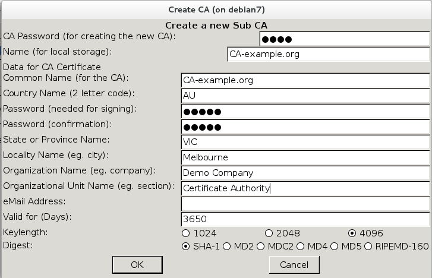
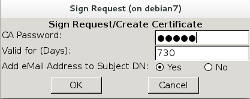

James Pinkster
MLUG - 29/10/2014
A public key certificate or digital certificate is an electronic document used to prove the ownership of a public key. are used as part of the SSL or TLS cryptographic protocols
| Type | Advantage | Disadvantage |
|---|---|---|
| Self-signed |
No cost Easy to create |
Users will get a warning message about untrusted certificate |
| Self-signed with PKI * |
No cost No warning messages once Root CA Certificate is installed |
Requires administration of certificates. Root CA cert needs to be installed in application |
| Free certificate from StartSSL or CAcert |
No cost Likely no warning for users. |
May require user account and supply of additional information. |
| Paid certificate | No warnings for users. | Costs $$$ |
# openssl req -new -x509 -days 3650 -nodes -newkey rsa:4096 -out /etc/ssl/certs/webserver-crt.pem -keyout /etc/ssl/private/webserver-key.pem
Will create a certificate and key without a passphrase.
Browser will display warning about self signed certificate.
-days 3650 |
Valid for 10 years |
-out |
Filename for certificte |
-keyout |
Filename for private key (ensure this location is secured) |
You are about to be asked to enter information that will be incorporated into your certificate request. What you are about to enter is what is called a Distinguished Name or a DN. There are quite a few fields but you can leave some blank For some fields there will be a default value, If you enter '.', the field will be left blank. ----- Country Name (2 letter code) [XX]:AU State or Province Name (full name) []:VIC Locality Name (eg, city) [Default City]:Melbourne Organization Name (eg, company) [Default Company Ltd]:Demo Company Organizational Unit Name (eg, section) []:website Common Name (eg, your name or your server's hostname) []:example.com Email Address []:
| Common Name | The hostname must match exactly how it would be resolved by DNS. |
# aptitude install tinycaRun command
# tinyca2
First run will present a screen to create a root CA and then a screen to configure it.
Configs and related files will be created in
/root/.TinyCA
# yum install epel-releaseRun tinyca2
# yum install perl-Gtk2 perl-gettext
# cd /root
# git clone https://github.com/glennie/tinyca2.git
# tinyca2/tinyca2
/root/.TinyCA
ROOTCA-Demo/ ├── cacert.key ├── cacert.pem ├── certs │ └── Q0EtZXhhbXBsZS5vcmc6IDpDZXJ0aWZpY2F0ZSBBdXRob3JpdHk6RGVtbyBDb21wYW55Ok1lbGJvdXJuZTpWSUM6QVU=.pem ├── crl │ └── crl.pem ├── index.txt ├── index.txt.attr ├── index.txt.old ├── keys │ └── Q0EtZXhhbXBsZS5vcmc6IDpDZXJ0aWZpY2F0ZSBBdXRob3JpdHk6RGVtbyBDb21wYW55Ok1lbGJvdXJuZTpWSUM6QVU=.pem ├── newcerts │ └── 01.pem ├── openssl.cnf ├── req │ └── Q0EtZXhhbXBsZS5vcmc6IDpDZXJ0aWZpY2F0ZSBBdXRob3JpdHk6RGVtbyBDb21wYW55Ok1lbGJvdXJuZTpWSUM6QVU=.pem └── serial └── serial.old
Common Name: |
This name will appear under issued by information |
Valid for (Days): |
Defaults to 10 years |
Key Usage (keyUsage) |
Certificate Signing, CRL Signing |
Netscape Certificate Type (nsCertType) |
SSL CA, S/MIME CA, Object Signing CA |
nsCaRevocationUrl |
Set these options if using certificate revocation |
| Exit | Open CA | Create a new CA | Import CA | Delete CA | Certificate Details | CA History | Create a new Sub CA | Export CA Certificate | Export CRL |
Ensure "CA" tab is selected. Click third icon from right "Create a new Sub CA"
CA Password |
The password used when the Root CA was created |
Common Name |
Make this meaningful |
Password |
This password should be different to the Root CA password, as it could be delegated. |
Select the Requests tab.
Click icon fourth from right (Create Request)
or right click and choose New Request
Common Name |
This must match the hostname configured for https |
Password |
This will be removed later. (If left with a password, the web server will ask for it when it restarts) |
Organizational Unit Name |
Will assist in understanding where the certificate fits in. |
Right click on request in list, choose Sign Request then select Sign Request (Server)
Enter the password set for CA-example.org
Once the request is signed the certificate is available under the Certificates tab
with a Status of
Users will be given this file to import into their web browser.
The certificate and key for the web site are now exported.
These files are included in the Web server https configuration
With CA-example.org still open
Select Keys tab » highlight the hostname » right click Export Key (2nd icon from right)
Without Passphrase (PEM/PKCS#12) |
If a passphrase is set, the web server will ask you to type it in every time it restarts. |
/etc/ssl/private/debian7.example.org-key.pemNOTE: Make this file secure (chmod 400 )
Open Firefox
» Edit » Preferences
» Advanced » Certificates tab
» click View Certificates » Authorities tab
» click Import... » choose ".pem" file
| PKI | Public Key Infrastructure |
| SSL | Secure Sockets Layer |
| TLS | Transport Layer Security |
| CRL | Certificate Revocation List |